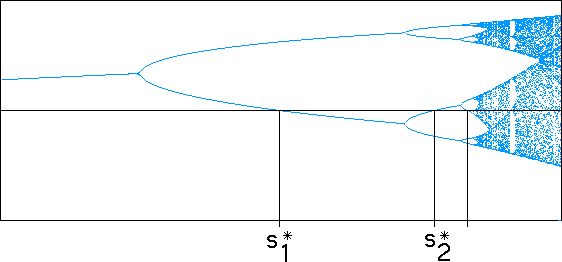

Here are the first few superstable points. For example,
and so on.
|  |
Here are the first 14 numerical values.
| s*0 | = 2.000000000000000000 |
| s*1 | = 3.236067977499789696 |
| s*2 | = 3.498561699327701520 |
| s*3 | = 3.554643880189573995 |
| s*4 | = 3.566667594798299166 |
| s*5 | = 3.569243531637110338 |
| s*6 | = 3.569795293749944621 |
| s*7 | = 3.569913465422348515 |
| s*8 | = 3.569938774233305491 |
| s*9 | = 3.569944194608064931 |
| s*10 | = 3.569945355486468581 |
| s*11 | = 3.569945604111078447 |
| s*12 | = 3.569945657358856505 |
| s*13 | = 3.569945668762899979 |
| s*14 | = 3.569945671205296863 |
We observe the superstable points are getting closer and closer together. In fact, the sequence of s*n converges to the Myerberg point, s*infinity, the same point to which the period-doubling si converge.
Return to Period-Doubling Scaling and the Feigenbaum Constant.